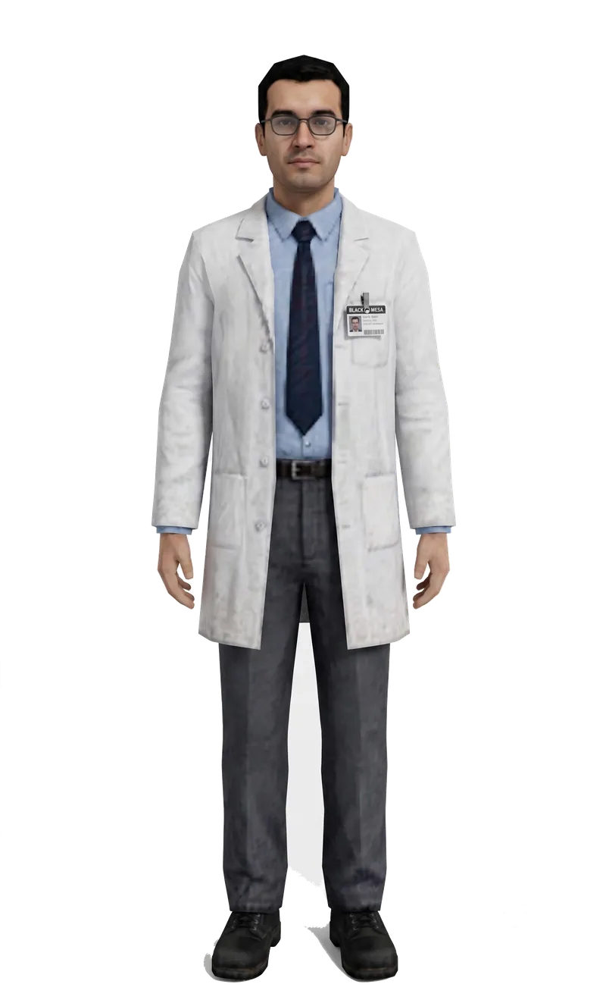
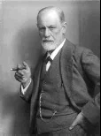

Hello! ☺
I am Hussam Habib. Currently, I am in Graz, Austria & I do Computational Social Science.

Hello! ☺
I am Hussam Habib. Currently, I am in Graz, Austria & I do Computational Social Science.
I am a postdoctoral researcher in the CS2 @ UniGraz, Austria.
Previously I was a researcher at NYU, with Rachel Greenstadt at the PSAL lab, a PhD student at University of Iowa, with Rishab Nithyanand at the SPARTA lab, and a member of the CP3.
I research how social media platforms behave, especially their recommender systems. I measure how platforms have the capacity to change user behaviors and show what it would take to make them work better for the people using them.
Current thoughts & Updates
